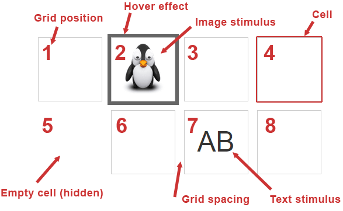

The tatool-grid template is a powerful component to arrange and display n stimuli in a grid structure on the screen. The tatool-grid offers different interaction features such as mouse click, mouseover and drag'n'drop out of the box. As with all templates, you have to add the HTML element to your Executable Template, and to add the template service as a dependency in order to use the component in your Executable.
1. Add the tatool-grid element to the HTML template of your Executable.
<!-- This represents the minimum required attributes. For the full list of attributes see <tatool-grid> attributes. -->
<tatool-grid service="myGrid">
</tatool-grid>
2. Add the gridServiceFactory as a new dependency to your Executable Service.
tatool
.factory('myExecutable', [ 'executableUtils', 'gridServiceFactory',
function (executableUtils, gridServiceFactory) {
...
3. Create a new grid service with the gridServiceFactory.
MyExecutable.prototype.init = function() {
// create a new grid service
this.gridService = gridServiceFactory.createService();
};
4. At the very beginning of your Controller code, make the new grid service available to your template by assigning it to the $scope property which you defined in Step 1 as 'gridService'.
tatool.controller('myExecutable', [ '$scope', 'service',
function ($scope, service) {
// assign the stimulus to your scope property 'gridService'
$scope.gridService = service.gridService;
$scope.start = function() {
// show grid (hidden by default)
service.gridService.show();
};
...
The Figure below shows an example of the tatool-grid in action. Cells within the grid can be adressed easily with one (and only one) number, the grid position. The gridPosition enumerates cells starting from 1 at the top left, and counting cell by cell and row by row. When the hover effect is enabled, it indicates which cell you're mouse is currently over. Every cell can contain either a stimulus (e.g., an image or text) or nothing at all. If no stimulus is provided, the cell will be empty and can be hidden. Every cell has a default style, but can be assigned a custom style if required. The grid spacing allows you to space the cells by having gaps between them. Remember that manipulations to the grid will only become visible after calling show().

Example tatool-grid
The following attributes can be provided when using the tatool-grid element in your Executable Template HTML. The attributes mainly control the styling and user interaction possibilities.
| Attribute | Value | Description |
|---|---|---|
| service | [grid service object] | Expects a grid service object created by the gridServiceFactory. |
| gridSpacing | collapse | Collapses all cell borders to create a unique border without spacing. |
| separate | Keeps cell borders separate without spacing. | |
| [n] | Keeps cell borders separate and sets the spacing to n pixels. | |
| cellClass | [css class] | Defines default class used for grid cells. |
| cellWidth | [n] | Defines default width of grid cells to n pixels. |
| cellHeight | [n] | Defines default height of grid cells to n pixels. |
| hideEmptyCells | yes | Hides all empty grid cells and their border. |
| disableHover | yes | Disables the hover effect on grid cells (assigns CSS class with name [cellClass]Static, with [cellClass] |
| allowDrag | yes | Defines whether drag feature is enabled by default for all cells. |
| allowDrop | yes | Defines whether drop feature is enabled by default on all empty cells. |
| all | Defines whether drop feature is enabled by default on all cells (replaces value in target cell). | |
| gridClick | [function(cell, timing, $event)] | Custom function to call on mouse click on a specific grid cell. |
| gridDrop | [function(dragCell, dropCell)] | Custom function to call on drop on a specific grid cell. |
| gridMouseEnter | [function(cell, $event)] | Custom function to call on mouse enter on a specific grid cell. |
| gridMouseLeave | [function(cell, $event)] | Custom function to call on mouse leave on a specific grid cell. |
Creates a new grid service. The reference below lists all available methods and some examples.
When developing using the tatool-grid, you'll be working with the gridServiceFactory, the grid service object, and/or with a specific grid cell object. All objects allow you to manipulate different aspects of the tatool-grid.
createService(rows, cols, gridId, stimuliPath, defaultVisible = false) - returns a new grid service object.
Creates a new grid service object that can be used to manipulate the cells in a grid. The dimensions of the grid can be defined by setting the number of rows and columns. In order to allow drag and drop behaviour between multiple grids, every grid must be assigned a unique gridId. The parameter stimuliPath can be used to let the service know where to access resources (e.g., images).
Parameters
rows: Integer value defining the number of rows to be displayed.
cols: Integer value defining the number of columns to be displayed.
gridId: String value defining the unique name of this grid.
stimuliPath: A Path Property object (see Properties for more details).
defaultVisible: Set true to change the default visibility of the grid to not be hidden at the start of the execution, thereby avoiding flickering of the display.
Example
// create a new grid service in your executable service
this.gridService = gridServiceFactory.createService(2, 4, 'myGrid', this.stimuliPath);
Important: Remember that manipulations to the grid will only become visible after calling refresh(). This allows you to trigger the visibility as you see fit in your Executable.
resize(rows, cols) - returns the grid service object.
Resizes your grid at runtime. To make the change visible, a call to redraw() is required.
Parameters
rows: Integer value defining the number of rows to be displayed.
cols: Integer value defining the number of columns to be displayed.
Example
// resizes grid to 2 rows and 3 columns
gridService.resize(2, 3);
Alternatively, you can also provide the possible keys upfront in your HTML Template. This will still allow for controlling the behaviour from your Executable via the input service, but reduce the required code. For the possible attributes see <tatool-key> attributes.
Example
<tatool-key code="ArrowLeft" response="blue"></tatool-key>
createCell(data) - returns a new cell object.
Creates a new tatool-grid cell that can be added to the grid. If you don't need the cell object as a return value, you can use the addCellAtPosition() or the addCell() method directly. To create a cell, a data object needs to be passed. As a tatool-grid cell displays one stimulus (note that empty cell are created implicitly without adding them explicitly), you have to pass the mandatory stimulus properties and the gridPosition (can also be provided later by using addCellAtPosition()). In addition, you can pass any custom properties you want to have available to process user feedback at a later point.
Parameters
data: A JavaScript object representing a stimulus. See required properties in the Table below.
| Property | Mandatory | Description |
|---|---|---|
| stimulusValueType | (yes) | The stimulus value type (text/image/circle/square). |
| stimulusValue | (yes) | The stimulus value (depending on stimulusValueType either a text or an image filename). |
| stimulusValueStyle | no | Provide custom css styling for your value (text or image). For example padding-top:5px;color:red. |
| gridPosition | (yes) | Sets the tatool-grid position for the cell. |
| gridCellHeight | no | Defines the height of the tatool-grid cell (overrides setting on tatool-grid element). |
| gridCellWidth | no | Defines the width of the tatool-grid cell (overrides setting on tatool-grid element). |
| gridCellClass | no | Defines a custom CSS class to be used to style this tatool-grid cell (overrides setting on tatool-grid element). |
| gridAllowDrag | no | Defines whether drag is allowed for this tatool-grid cell (doesn't override setting on tatool-grid element). |
| gridAllowDrop | no | Defines whether drop is allowed for this tatool-grid cell (doesn't override setting on tatool-grid element). |
Example
var data = {stimulusValue: 'A', stimulusValueType: 'text', myProperty: 'ABC'};
// create a new cell and pass in our data object
var myCell = gridService.createCell(data);
addCell(cell) - returns the grid service object.
Adds a new cell to the tatool-grid. Expects a tatool-grid cell object as returned by the createCell() method. All mandatory properties must already have been set manually when creating the cell. By using the addCellAtPosition() method instead, you can provide the gridPosition property at the time of adding a cell.
Parameters
cell: aA cell object as returned by createCell().
Example
var data = {gridPosition: 3, stimulusValue: 'A', stimulusValueType: 'text', myProperty: 'ABC'};
var myCell = gridService.createCell(data);
// add the new cell
gridService.addCell(myCell);
addCellAtPosition(gridPosition, data) - returns the grid service object.
Adds a new cell to the tatool-grid at the given gridPosition. Expects a data object with the mandatory stimulus properties as listed under the createCell() method.
Parameters
gridPosition: The position inside the grid to add the cell.
data: A JavaScript object representing a stimulus (see createCell() method for the required properties).
Example
var data = {stimulusValue: 'A', stimulusValueType: 'text', myProperty: 'ABC'};
// add new cell at gridPosition 3
gridService.addCellAtPosition(3, data);
getCell(gridPosition) - returns the cell object.
Returns the cell object at the given gridPosition.
Parameters
gridPosition: Returns the cell at the given position inside the grid.
Example
// get cell at position 3
var myCell = gridService.getCell(3);
getCells() - returns an array of all cell objects.
Returns the cells assigned to a grid (empty cells are not included).
Example
// get all cells from grid
var myCells = gridService.getCells();
getNumCells() - returns number of cells.
Returns the number of cells assigned to a grid (empty cells are not included).
Example
// get the number of cells from grid
var numCells = gridService.getNumCells();
removeCell(gridPosition) - returns the grid service object.
Removes the cell from the grid at the given gridPosition.
Parameters
gridPosition: cell position inside the grid
Example
// remove cell at position 3
gridService.removeCell(3);
moveCell(fromPosition, toPosition) - returns the grid service object.
Moves cell from one gridPosition (fromPosition) to another gridPosition (toPosition). The cell at toPosition will be replaced.
Parameters
fromPosition: Cell position inside the grid.
toPosition: Cell position inside the grid.
Example
// move cell at gridPosition 3 to gridPosition 5
gridService.moveCell(3,5);
swapCell(position1, position2) - returns the grid service object.
Swaps the cell at a specific gridPosition (position1) with the cell at another gridPosition (position2).
Parameters
position1: Cell position inside the grid.
position2: Cell position inside the grid.
Example
// swap cell at position 3 and 5
gridService.swapCell(3,5);
clear() - returns the grid service object.
Clears all cells in the grid.
Example
// remove all cells
gridService.clear();
refresh() - (no return value)
Refreshes the grid to show all changes made to it since it was refreshed the last time. This method will refresh only the cells that have been changed since the last refresh or redraw(). As most methods that manipulate the grid return the grid service object itself, you can chain the refresh() call to your previous call as in the last line in the following example:
Example
// refresh the grid
gridService.refresh();
// add a new cell and refresh afterwards
gridService.addCellAtPosition(3, data).refresh();
redraw() - (no return value)
Redraws the whole grid to show all changes made to it since it was redrawn the last time. This method will redraw all cells regardless of changes and should only be used in the case where refresh() can't be used (e.g., resize). As most methods that manipulate the grid return the grid service object itself, you can chain the redraw() call to your previous call as in the last line in the following example:
Example
// redraw the grid
gridService.redraw();
// resize grid and redraw
gridService.resize(3, 5).redraw();
remove() - returns the grid service object.
Removes the cell from the tatool-grid.
Example
// removes the cell
myCell.remove();
move(direction,[numCells]) - returns the grid service object.
Moves the cell into the given direction (left, up, right, down) for a given number of cells. If you don't provide the numCells parameter it will be 1 by default. The cell at the target position will be replaced.
Parameters
direction: String value indicating the direction to move (left, up, right, down).
numCells: Integer value defining the number of cells to move into the given direction.
Example
// move the cell 2 cells to the right replacing any exiting cell at that position
myCell.move('right', 2);
// moves the cell 1 down replacing any exiting cell at that position
myCell.move('down');
moveTo(toPosition) - returns the grid service object.
Moves the cell to the given gridPosition (toPosition), replacing any existing cell.
Parameters
toPosition: Integer value defining the gridPosition to move this cell to.
Example
// move the cell to gridPosition 4 replacing any exiting cell at that position
myCell.moveTo(4);
getNext(direction,[numCells]) - returns the cell object.
Gets the next cell relative to this cell in the given direction (left, up, right, down) and the given numCells in away. If you don't provide the numCells parameter it will be 1 by default.
Parameters
direction: String value indicating the direction (left, up, right, down) to search for neighbour cell.
numCells: Integer value defining the distance in number of cells to search for neighbour cell.
Example
// gets the cell 2 positions to the right of myCell
var nextCellRight = myCell.getNext('right', 2);
// gets the cell 1 position above of myCell
var nextCellUp = myCell.getNext('up');